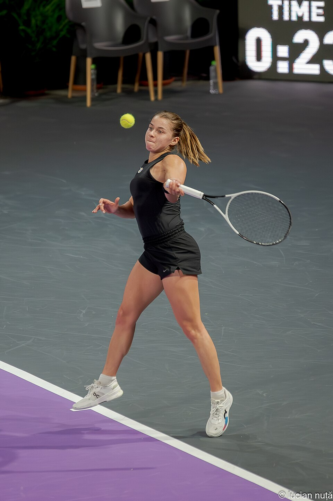

O WTA de Wuhan 2026 terá uma campeã inédita depois de duas semifinais marcadas por reviravoltas, superação e resultados surpreendentes. Disputadas neste sábado, 17 de outubro, na China, as partidas definiram uma final entre a polonesa Maja Chwalinska e a britânica Sonay Kartal, duas jogadoras que chegaram ao torneio fora do grupo das 20 melhores do ranking mundial.
Chwalinska derrotou a compatriota Iga Swiatek, ex-número 1 do mundo e vencedora de seis títulos de Grand Slam. A partida ganhou contornos dramáticos quando Swiatek sofreu um problema físico na perna esquerda, precisou de atendimento médico e não conseguiu manter o rendimento apresentado no início do confronto.
Na outra semifinal, Kartal protagonizou uma recuperação impressionante contra a letã Jelena Ostapenko. A britânica venceu depois de enfrentar desvantagens nos dois sets e resistir à agressividade da adversária.
Os resultados produziram uma decisão histórica. Pela primeira vez desde a criação do torneio, em 2014, duas jogadoras posicionadas fora do top 20 mundial disputarão o título de simples em Wuhan.
O caminho até a decisão começou a ganhar forma nas quartas de final, quando o torneio definiu os confrontos que colocariam frente a frente algumas das principais protagonistas da competição. A rodada de quartas de final ajuda a contextualizar a reta decisiva do torneio chinês, que terminou com Maja Chwalinska e Sonay Kartal classificadas para disputar o título.
Maja Chwalinska avança em semifinal marcada por lesão
O encontro entre as tenistas carregava uma história particular. As duas polonesas se conhecem desde a infância, foram parceiras nas categorias de base e chegaram juntas à final de duplas juvenil do Australian Open de 2017.
Dez anos depois de seu primeiro confronto profissional, em um torneio do circuito ITF, voltaram a ficar frente a frente em uma ocasião muito maior: uma semifinal de WTA 1000.
Swiatek começou melhor e abriu 5/3 no primeiro set. A ex-líder do ranking chegou a ter dois set points, mas Chwalinska resistiu, recuperou a desvantagem e passou a controlar a disputa.
O momento determinante aconteceu ainda na primeira parcial. Com Chwalinska à frente por 6/5, Swiatek precisou interromper a partida para receber atendimento médico por um problema na perna esquerda.
A polonesa retornou com a coxa enfaixada, mas apresentou dificuldades de movimentação. A limitação prejudicou especialmente sua capacidade de alcançar bolas mais distantes e reagir durante as trocas de golpes.
Chwalinska aproveitou a mudança no cenário, fechou o primeiro set por 7/5 e dominou a segunda parcial por 6/1. A vitória foi concluída em 2 horas e 8 minutos.
Embora a lesão de Swiatek tenha influenciado diretamente o confronto, a reação de Chwalinska começou antes da interrupção médica. A finalista de Roland Garros em 2026 já havia conseguido reverter uma situação desfavorável no placar.
A classificação colocou Chwalinska em sua primeira decisão de WTA 1000 e ampliou o destaque de uma temporada em que conseguiu levar seu tênis a grandes competições.
Sonay Kartal avança após dois tie-breaks
Se uma semifinal foi marcada pelo problema físico de Swiatek, a outra colocou à prova a resistência psicológica de Sonay Kartal.
A britânica enfrentou Jelena Ostapenko, campeã de Roland Garros em 2017 e conhecida pelo estilo ofensivo, com golpes potentes e disposição para buscar pontos vencedores.
A letã abriu 4/1 nos dois sets, mas não conseguiu transformar as vantagens em vitória.
Na primeira parcial, Kartal reagiu, recuperou as quebras de serviço e levou a disputa ao tie-break. Mesmo pressionada, venceu por 11 a 9, garantindo o primeiro set por 7/6.
O segundo repetiu parte do roteiro. Ostapenko voltou a construir uma vantagem de 4/1 e teve oportunidades de prolongar o confronto. Kartal, entretanto, manteve a consistência nos momentos decisivos, salvou set points e forçou outro desempate.
A britânica venceu o segundo tie-break por 7 a 5 e encerrou a semifinal em sets diretos.
Ostapenko terminou a partida com 41 erros não forçados, estatística que ajuda a explicar como perdeu o controle de um confronto no qual havia conseguido importantes vantagens.
Para Kartal, o resultado representou muito mais do que uma classificação. A tenista de 24 anos havia passado seis meses afastada das competições por uma lesão nas costas e chegou a Wuhan ocupando a 170ª posição do ranking mundial.
Sua campanha transformou o retorno ao circuito em um dos grandes acontecimentos desta edição do torneio.
A campanha de Maja Chwalinska até a final
Chwalinska, cabeça de chave número 16 em Wuhan, chegou à decisão depois de superar cinco adversárias.
Campanha da polonesa:
- Primeira rodada: venceu Mayar Sherif por 6/3 e 6/2.
- Segunda rodada: venceu Marie Bouzkova por 1/6, 6/1 e 6/1.
- Oitavas de final: venceu Iva Jovic por 6/4 e 6/1.
- Quartas de final: venceu Maria Sakkari por 6/0, 3/6 e 7/5.
- Semifinal: venceu Iga Swiatek por 7/5 e 6/1.
A campanha também evidencia a evolução competitiva de Chwalinska. Depois de alcançar a final de Roland Garros em 2026, disputada no saibro, a polonesa demonstrou capacidade de produzir resultados expressivos nas quadras duras da gira asiática.
A campanha de Sonay Kartal até a final
O caminho de Kartal foi particularmente exigente, com vitórias sobre adversárias de destaque no circuito feminino.
Resultados da britânica:
- Primeira rodada: venceu Anhelina Kalinina por 7/5 e 6/3.
- Segunda rodada: venceu Belinda Bencic por 6/0 e 7/5.
- Oitavas de final: venceu Jasmine Paolini por 6/2 e 6/0.
- Quartas de final: venceu Elina Svitolina por 2/6, 6/2 e 6/4.
- Semifinal: venceu Jelena Ostapenko por 7/6 (11-9) e 7/6 (7-5).
A vitória sobre Svitolina, então sexta colocada do ranking mundial, foi especialmente importante pela capacidade de reação depois de perder o primeiro set.
A vaga na final representa um marco para Kartal. Ela se tornou a segunda britânica a alcançar uma decisão de torneio da categoria Tier I/WTA 1000 desde 1990, depois de Johanna Konta.
Final do WTA Wuhan 2026:
A final feminina de Wuhan será disputada no domingo, 18 de outubro, entre Maja Chwalinska e Sonay Kartal.
O confronto terá uma particularidade importante: independentemente do resultado, a competição conhecerá uma campeã inédita de WTA 1000.
Chwalinska busca o primeiro título de simples de sua carreira no circuito principal. Kartal, por sua vez, já conquistou um troféu de nível WTA 250 em Monastir, na Tunísia, em 2024, mas nunca venceu uma competição da categoria 1000.
Além do troféu, a decisão terá impacto significativo na pontuação das duas tenistas no ranking.
- Confronto: Maja Chwalinska x Sonay Kartal
- Data: domingo, 18 de outubro de 2026
- Horário: não antes das 7h30, pelo horário de Brasília
- Transmissão: ESPN, na TV por assinatura, e Disney+, no streaming.
- Premiação da campeã: US$ 665 mil
- Pontuação da campeã: 1.000 pontos no ranking WTA
- Premiação da vice-campeã: US$ 385.001
- Pontuação da vice-campeã: 650 pontos
A final de duplas está programada para acontecer antes da decisão de simples. Por isso, o horário da partida entre Chwalinska e Kartal poderá depender da duração do confronto anterior.
O que esperar da decisão
O confronto reúne duas histórias de ascensão por caminhos diferentes.
Chwalinska chega apoiada na campanha de destaque em Roland Garros e em um estilo de jogo marcado por variações de ritmo e construção dos pontos. Sua capacidade de adaptar esse repertório às quadras duras foi uma das características observadas durante a competição.
Kartal apresenta como principal referência recente a capacidade de competir sob pressão. Contra Ostapenko, resistiu a momentos de grande dificuldade e manteve a concentração nas oportunidades decisivas.
Não há, porém, um favoritismo que possa ser estabelecido apenas pelos resultados das semifinais. Ambas derrotaram adversárias de alto nível e chegaram à decisão depois de campanhas consistentes.
WTA Wuhan 2026 terá uma campeã inédita
A definição das finalistas mostrou como um torneio WTA 1000 pode ser decidido por elementos que vão além da posição das atletas no ranking.
Swiatek chegou à semifinal com a experiência de múltiplos títulos de Grand Slam, mas encontrou resistência de Chwalinska antes de ter o desempenho comprometido por uma lesão. Ostapenko, por sua vez, chegou a construir vantagens expressivas, mas não conseguiu superar a consistência de Kartal nos momentos mais importantes.
As duas classificadas representam trajetórias distintas. Chwalinska procura transformar sua evolução competitiva no primeiro troféu do circuito principal, enquanto Kartal tenta coroar um retorno de lesão com o título mais importante de sua carreira.
O WTA Wuhan 2026 chega, assim, a uma final que foge das expectativas iniciais e reforça uma característica essencial do tênis feminino: em uma semana de mata-mata, ranking e histórico ajudam a contextualizar os confrontos, mas são a capacidade de adaptação, a execução técnica e a resistência nos momentos decisivos que determinam quem continua na disputa pelo título.